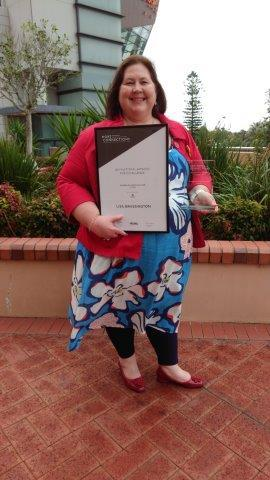

Lisa Brassington of Peninsula Fresh Organics in Victoria has received the prestigious Women in Horticulture award at Hort Connections 2017! Congratulations Lisa!!! @agperiurban
Twas in recognition of her passion for promoting the diverse role of women in the industry and her ongoing contribution to the organic sector.
"AUSVEG Deputy Chair Belinda Adams said Lisa’s commitment to highlighting the varied and integral role of women in the horticulture industry made her a deserving recipient of the award.
“When you meet Lisa it is clear that her passion is two-fold: she is committed to sustainability and producing quality organic produce, as well as strengthening the leadership of women in horticulture and the wider agriculture industry,” Mrs Adams said.
“Lisa is a passionate and proactive industry leader and a shining example of the fundamental role that women play in Australian horticulture, be it in key managerial roles or behind the scenes. The Women in Horticulture award is an important recognition of that fact and Lisa is a fitting recipient,” Mrs Adams.
http://www.getsmallfarms.com.au/2017/05/18/value-adding-agenda-women-horticulture/
